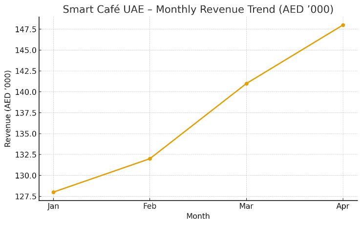
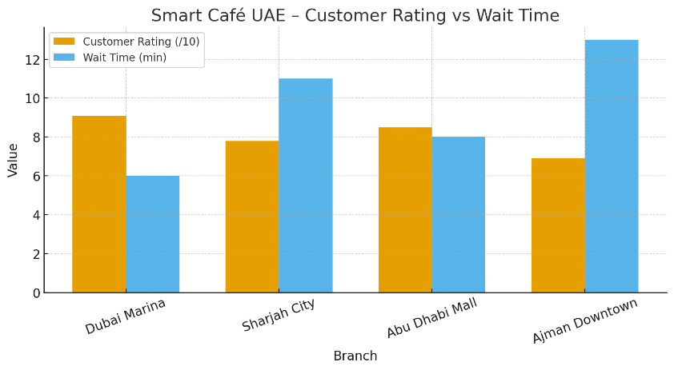
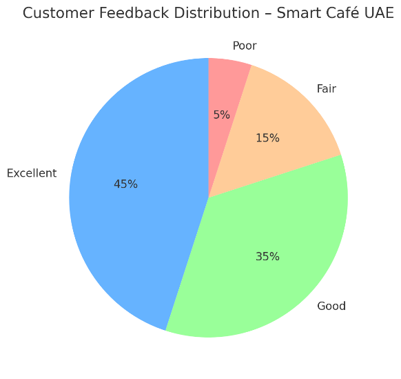

<!doctype html>
<html lang="en">
<head>
<meta charset="utf-8">
<meta name="viewport" content="width=device-width,initial-scale=1,viewport-fit=cover">
<title>Practice Midterm · GED 106</title>
<link rel="preconnect" href="https://fonts.googleapis.com">
<link rel="preconnect" href="https://fonts.gstatic.com" crossorigin>
<link rel="stylesheet" href="https://fonts.googleapis.com/css2?family=JetBrains+Mono:wght@400;600&family=Schibsted+Grotesk:wght@400;600;700;800&family=Source+Serif+4:opsz,wght@8..60,400;8..60,600&display=swap">
<link rel="stylesheet" href="assets/course.css">
<style>
:root{--wk:#A3333D;--wk-soft:rgba(163,51,61,.10);--wk-d:#F2939B;--wk-soft-d:rgba(242,147,155,.14)}
.scroll{overflow-x:auto}
.charts{display:grid;gap:12px}
.charts img{display:block;width:100%;max-width:100%;height:auto;background:#fff;border-radius:8px;border:1px solid var(--line)}
.charts .two{display:grid;grid-template-columns:minmax(0,1fr);gap:12px}
@media (max-width:640px){.charts .two{grid-template-columns:minmax(0,1fr)}}
</style>
</head>
<body>
<script src="assets/course.js"></script>
<script>
const {W,B}=Lecture;
const MA={label:'Show model answer',prefix:'<b>Model answer:</b> ',numbered:false};
const CAFE=`<div class="scroll"><table class="tbl"><thead><tr><th>Branch</th><th>Customer Rating (/10)</th><th>Wait Time (min)</th><th>Daily Orders</th><th>Monthly Revenue (AED '000)</th></tr></thead><tbody>
<tr><td>Dubai Marina</td><td>9.1</td><td>6</td><td>310</td><td>148</td></tr><tr><td>Sharjah City</td><td>7.8</td><td>11</td><td>250</td><td>116</td></tr><tr><td>Abu Dhabi Mall</td><td>8.5</td><td>8</td><td>280</td><td>132</td></tr><tr><td>Ajman Downtown</td><td>6.9</td><td>13</td><td>200</td><td>94</td></tr></tbody></table></div>`;
const CHARTS=`<div class="charts"><div class="two"></div>${CAFE}</div>`;
const LIB=`<div class="scroll"><table class="tbl"><thead><tr><th>Faculty</th><th>Avg. Books Borrowed per Student</th><th>Avg. Exam Score (%)</th><th>Number of Students</th></tr></thead><tbody>
<tr><td>Business</td><td>3.2</td><td>77</td><td>180</td></tr><tr><td>Engineering</td><td>4.8</td><td>83</td><td>150</td></tr><tr><td>Communication</td><td>2.6</td><td>71</td><td>120</td></tr><tr><td>Architecture</td><td>1.9</td><td>68</td><td>100</td></tr></tbody></table></div>`;
const SURVEY=`<ol><li>“How satisfied are you with EcoSip's environmental performance?”</li><li>“Don't you agree EcoSip is the best green brand?”</li><li>“Share your location and phone number for a discount coupon?”</li><li>“What do you think about EcoSip bottles in general?”</li></ol>`;

Lecture.mount({
  id:'g106-pmid', course:'GED 106', week:'Practice', clo:'1, 2, 3', short:'Practice · Midterm (Fall 2025)',
  title:'Practice Midterm',
  meta:'Last year\'s Midterm · 20 marks · 90 minutes',
  scenes:[
  { nav:'How to use this', title:'Practice with last year\'s Midterm', kind:'review',
    narration:[
     `This is the <strong>Midterm Exam from Fall 2025</strong>, with model answers. It was worth <strong>20 marks</strong> in <strong>90 minutes</strong>, closed book.`,
     `<ul><li><b>Section A:</b> ethical and governance principles (6 marks).</li><li><b>Section B:</b> reading and interpreting data from charts and a table (7 marks).</li><li><b>Section C:</b> descriptive and diagnostic analytics for decisions (7 marks).</li></ul>`,
     B.exam(`Set a 90-minute timer, answer on paper, then compare with the model answers. In data questions, always quote the numbers you used.`)],
    notes:[`Model answers were written for practice; adjust them to match your marking scheme if needed.`],
    fig:{label:`Suggested time · 90 minutes`, build:el=>W.agenda(el,[[`Section A · Ethics and governance (6 marks)`,27,'l'],[`Section B · Reading data (7 marks)`,31,'a'],[`Section C · Analytics for decisions (7 marks)`,32,'c']])} },

  { nav:'A1 · Smart surveys', title:'Section A · Part 1: Smart Surveys Across Borders (3.5 marks)', kind:'review',
    narration:[
     `EcoSip Inc. launched a customer-feedback survey in both <strong>Dubai</strong> and <strong>Toronto</strong>. Each region followed its own data-governance framework: in <strong>Canada</strong>, <em>PIPEDA (2000)</em>; in the <strong>UAE</strong>, the <em>Dubai Data Law (Law No. 26 of 2015)</em>.`,
     `<b>Selected survey items:</b>${SURVEY}`,
     `For each item, decide whether it is <b>biased</b>, <b>open-ended</b>, or <b>violates ethics</b>. Rewrite biased items neutrally; convert open-ended items to closed-ended versions.`],
    fig:{label:`Q1–Q4`, build:el=>W.practice(el,[
      {q:`<b>Q1.</b> Which survey item violates the Principle of Privacy? How could you correct it? (1 mark)`,hint:`<b>Item 3.</b> It asks for location and phone number, personal data that is not needed to give feedback. Correction: make it optional and separate from the survey, ask only for what the coupon needs (for example an email), explain how the data will be used and stored, and get clear consent: “If you would like a discount coupon, you may enter your email (optional). We will use it only to send the coupon.”`},
      {q:`<b>Q2.</b> Which item demonstrates bias in wording and violates an ethical principle? Rewrite it neutrally. (1 mark)`,hint:`<b>Item 2.</b> “Don't you agree…” is a leading question that pushes people to agree. Neutral version: “How would you rate EcoSip as a green brand? (1 = very poor, 5 = excellent)”.`},
      {q:`<b>Q3.</b> “What do you think about EcoSip's environmental policy?” is close-ended or open-ended? If open-ended, convert it.`,hint:`<b>Open-ended.</b> Closed version: “How would you rate EcoSip's environmental policy? Very poor / Poor / Neutral / Good / Very good”. (Item 4 is also open-ended and is converted the same way.)`},
      {q:`<b>Q4.</b> A company collects data only to advertise but tells participants it is for research. Which principle is broken? (0.5 mark)`,hint:`<b>Transparency</b>: people were not told the true use of their data. (The real intention also differs from the stated one, so Intention is affected too.)`}],MA)} },

  { nav:'A2 · Matching', title:'Section A · Part 2: Matching (2.5 marks)', kind:'review',
    narration:[`Match each scenario to the single best principle: <b>Ownership, Transparency, Privacy, Intention, Outcomes.</b> Half a mark each.`],
    fig:{label:`Five scenarios`, build:el=>W.sort(el,{buckets:['Ownership','Transparency','Privacy','Intention','Outcomes'],reveal:'Show model answers',items:[
      {t:`1. An app collects location data in the background without visible consent.`,a:0,why:`People own their data; collecting it without consent breaks ownership.`},
      {t:`2. A survey form states how responses will be stored and who can see them.`,a:1,why:`Telling people how data is stored and used is transparency.`},
      {t:`3. A university collects dining data for “event recommendations” that do not require it.`,a:3,why:`Collecting data the stated purpose does not need: check intention and collect only what you need.`},
      {t:`4. A dashboard team removes names/IDs and limits who can access raw files.`,a:2,why:`Protecting identities and limiting access is privacy.`},
      {t:`5. Before launching a hiring model, a team evaluates if any group is unfairly harmed.`,a:4,why:`Checking real effects on groups is outcomes.`}]})} },

  { nav:'A3 · True/False', title:'Section A · Part 3: True/False with Correction (1.5 marks)', kind:'review',
    narration:[`Write <b>T</b> or <b>F</b>. If <b>F</b>, give a 3–5-word correction.`],
    fig:{label:`Three statements`, build:el=>W.practice(el,[
      {q:`1. “People own their personal data.”`,hint:`<b>T</b> (Ownership).`},
      {q:`2. “Transparency means hiding methods to avoid confusion.”`,hint:`<b>F</b>. Correction: “Transparency means openly explaining methods.”`},
      {q:`3. “Collect the minimum data needed for the stated purpose.”`,hint:`<b>T</b> (data minimisation, linked to Intention).`}],MA)} },

  { nav:'Section B', title:'Section B · Reading & Interpreting Data (7 marks)', kind:'review', wide:true,
    narration:[
     `Use the charts and the table <b>Dataset B: Smart Café UAE – Monthly Snapshot</b> to answer B1–B5.`,
     B.exam(`Quote the numbers. For B3 and B5, describe a relationship carefully: data can show a link, but other factors may also play a part.`)],
    fig:{label:`Smart Café UAE · charts and Dataset B`, html:CHARTS, build:el=>{ const d=document.createElement('div'); d.style.marginTop='16px'; el.appendChild(d); W.practice(d,[
      {q:`<b>B1.</b> Best overall branch (rating + revenue). (1 mark)`,hint:`<b>Dubai Marina</b>: highest rating (9.1/10) and highest monthly revenue (AED 148,000), with the shortest wait (6 min).`},
      {q:`<b>B2.</b> Needs improvement: state branch + one reason. (1.5 marks)`,hint:`<b>Ajman Downtown</b>: lowest rating (6.9/10) and lowest revenue (AED 94,000), with the longest wait time (13 min).`},
      {q:`<b>B3.</b> As wait time increases, customer satisfaction generally: Increases / Decreases / No clear change. (1 mark)`,hint:`<b>Decreases.</b> Ratings fall as waits get longer: 6 min → 9.1, 8 min → 8.5, 11 min → 7.8, 13 min → 6.9.`},
      {q:`<b>B4.</b> One managerial action supported by the data. (1.5 marks)`,hint:`Reduce wait times at <b>Ajman Downtown</b> (and Sharjah City): add staff at peak hours or copy Dubai Marina's service process, with a target of about 8 minutes or less. Shorter waits go with higher ratings and revenue in the data.`},
      {q:`<b>B5.</b> If Ajman reduces wait time and revenue rises next month, write the most reasonable conclusion (one phrase). (2 marks)`,hint:`“<b>Shorter wait times are associated with higher customer satisfaction and revenue</b>”: the result supports the link seen in the data, though other factors (season, promotions) should also be checked.`}],MA); },
      caption:`Charts and table from the Fall 2025 midterm.`} },

  { nav:'Section C', title:'Section C · CUD Library Use and Exam Performance (7 marks)', kind:'review', wide:true,
    narration:[
     `The Canadian University Dubai collected data on how many books students borrowed this semester and their corresponding average exam scores. The Academic Affairs Office wants to analyze whether students who use the library more tend to achieve better results, and how this insight can guide future support programs.`,
     B.exam(`Use the four levels from Week 4: <b>what happened → why → what will happen → what should we do</b>. Remember: correlation is not causation (Week 6).`)],
    fig:{label:`Library use and exam scores`, html:LIB, build:el=>{ const d=document.createElement('div'); d.style.marginTop='16px'; el.appendChild(d); W.practice(d,[
      {q:`<b>1.</b> The table mainly represents which level of analytics? (1 mark)`,hint:`<b>Descriptive</b>: it summarises what happened this semester.`},
      {q:`<b>2.</b> Write one short descriptive statement summarizing what happened. (1 mark)`,hint:`Engineering students borrowed the most books (4.8 per student) and had the highest average score (83%), while Architecture borrowed the fewest (1.9) and had the lowest (68%).`},
      {q:`<b>3.</b> Give one possible diagnostic reason explaining this pattern. (1 mark)`,hint:`Students who borrow more books may spend more time studying and preparing, which can raise exam scores. (Also accepted: some programmes need more reading than others, so the link may come partly from differences between faculties.)`},
      {q:`<b>4.</b> Suggest one predictive use of this data for next semester. (1 mark)`,hint:`Use borrowing levels to predict which faculties or students are likely to score lower, so support can start early.`},
      {q:`<b>5.</b> Suggest one prescriptive action the university could take. (1 mark)`,hint:`Run library workshops and recommended reading lists for faculties with low borrowing (Architecture, Communication), and encourage library use early in the semester.`},
      {q:`<b>6.</b> The Academic Affairs team plans to post the comparison by faculty on the website. Which data-ethics principle must be considered? `,hint:`<b>Privacy</b>: publish only aggregated faculty-level results, never data that could identify individual students. (Outcomes is also worth mentioning: a public ranking could unfairly label a faculty.)`},
      {q:`<b>7.</b> If each faculty increases borrowing by one book per student next term, predict one possible impact on exam performance. (1 mark)`,hint:`Average exam scores would likely <b>rise</b>. Based on the trend across the four faculties, one extra book goes with roughly <b>5 percentage points</b> higher scores. This is a prediction from a correlation, not proof that borrowing causes higher scores.`}],MA); }} },

  { nav:'Before the midterm', title:'Checklist before the midterm', kind:'review',
    narration:[
     `<ul><li>Know the five ethics principles and match scenarios to them (Week 7).</li><li>Spot leading, open-ended and privacy-breaking survey items, and rewrite them (Weeks 3 and 7).</li><li>Read charts and tables: name the best and worst, quote numbers, describe relationships (Week 5).</li><li>Use the four levels of analytics on a case (Week 4).</li><li>Say “associated with”, not “causes”, unless there is proof (Week 6).</li></ul>`,
     `See also: <a href="practice-quiz1.html">practice Quiz 1</a> and the <a href="review.html">midterm review page</a>.`] }
  ]
});
</script>
</body>
</html>
